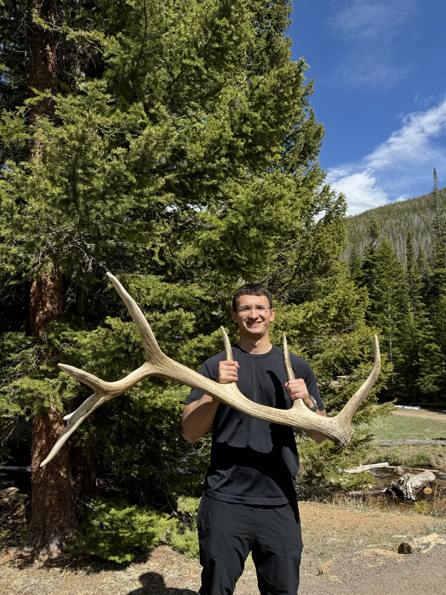
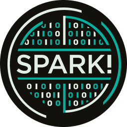

I build software across computer vision, robotics, and mobile products. I also love photography, design, and skiing.

I’m from Kazakhstan and based in Dallas. My path into software began with high school robotics and grew into work on mobile products, computer vision, and tools for understanding the physical world.
Outside of engineering, I love photography, design, and skiing. I’m drawn to both making things and getting outside to see a little more of the world.
▣ Photography
✳ Design
△ Skiing
Boston University
B.S. Applied Mathematics
Class of 2026
Robotics & Autonomous Systems · Linear Algebra · Probability · Mathematical Statistics · Analysis of Variance · Data Science in R · Linear Models · Introduction to Analysis II · Introduction to Stochastic Processes · Foundations of Mathematics
Fidelity Investments | Mobile Software Engineer Intern · Merrimack, NH
Reduced document-rendering latency by 70%, from 300 ms to 90 ms, across 100K+ daily sessions in NetBenefits Health.
Improved offline reliability by migrating GraphQL document APIs to REST across Swift, Java, Node.js, and SQL systems.
SwiftUI · Swift · REST APIs · Java · SQL
May 2025Jun 2023
Boston University | Research Software Engineer · College of Engineering
Built a ROS 2 three-drone perception system on NVIDIA Jetson, processing 500GB+ of daily sensor data with sub-50 ms latency and sub-2 mm localization.
Achieved 94% road-defect detection accuracy across 50K+ image frames and 64 km using PyTorch and YOLO.
ROS 2 · C++ · PyTorch · PCL · Open3D
Autonomous road-assessment work with the 80edays drone systems team.
May 2024

Jan 2024
Spark! Innovation Apprenticeship | Software Developer, Backend & ML
Developed traffic-aware route optimization with a deep Q-network trained on 20K trip records, reducing average trip duration by three minutes.
Aug 2024Sep 2023
Microsoft for Startups | AI Software Developer
Received funding to develop applications using large language models.
Aug 2023Jun 2023
nFactorial Incubator | AI Software Developer
Built and launched MyGapMentor through an incubator that accepted 2.3% of 4,500 applicants. The platform helped 50+ students receive college offers and secured $50K in funding.
Aug 2022Jun 2022
nFactorial Incubator | Software Developer
Built and launched GeoTab, a Chrome extension for learning flags, capitals, and geography.
Aug 2021Jun 2021
Global Health Research Center of Central Asia | Software Developer Intern
Developed a research website and digitized 400+ studies to make health research accessible online.
Aug 2020Jun 2020
Gradcompleks Architectural | 3D Design Intern
Modeled 5,600 km² of Kazakhstani terrain in 3ds Max using satellite data and architectural blueprints.
A browser workspace for exploring synchronized camera and LiDAR data. Two calibrated camera views, 3D point clouds, overlays, and playback make sensor geometry easier to inspect.
4,488 3D points per frame · 42 shared validation fixtures
A boxing biomechanics and video-analysis platform that tracks strikes and compares fighter performance. C++ and Python inference connects to a Next.js and FastAPI dashboard.
23 metrics at 60 FPS · 200+ hours of annotated footage
A mobile fitness prototype exploring pose estimation and exercise-form feedback. Try the browser demo with sample videos, prerecorded skeleton overlays, and comparisons between attempts.
A designated-driver app for getting passengers and their own cars home. Explore rider and driver views, nearby matching, pickup-code confirmation, and a complete sample trip in the browser demo.
A storytelling platform with a browser story library and device narration, plus a self-hosted parent-voice studio. Awarded third place at MakeHarvard 2024, as featured by Harvard SEAS.
A gap-year workspace for finding opportunities, building a weekly plan, and tracking applications and accomplishments. Includes daily opportunity feeds and a mentor guide with no API key required.
 Jan 2026
Jan 2026